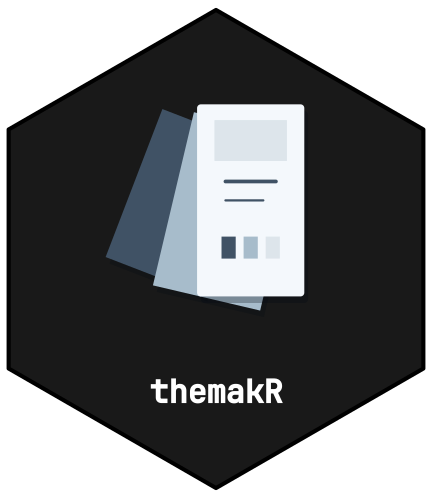

themakR is the pkgdown template for the CTTIR package suite. It gives every package the same look — the Hugo Coder palette used on the suite site with light and dark modes, Inter body text, JetBrains Mono code, a light/dark/auto toggle, the hex top-left in the navbar, the rotemplate-style navigation and sidebar, and a shared suite footer — with two lines of configuration. This vignette is the complete adoption guide.
1. Declare the website dependency
Add this line to your package’s DESCRIPTION, so the
pkgdown GitHub Action installs themakR before building your site:
Config/Needs/website: CTTIR/themakR2. Point your site at the template
Add this to your package’s _pkgdown.yml:
That is the whole theme configuration. Colours and colour modes, fonts, syntax-highlighting themes, the navbar layout (brand far left; Search, Reference, Articles, Changelog, GitHub, and the light switch grouped on the right), and the home sidebar are all inherited from themakR.
3. Provide your hex
Copy the approved named v5 light hex to
man/figures/logo.svg and man/figures/logo.png.
Copy its dark counterpart to man/figures/logo-dark.svg.
These standard aliases are the same artwork as
logo-with-name.svg, logo-with-name.png, and
logo-with-name-dark.svg. The package name belongs inside
the lower part of every branding hex. The live navbar title remains
available for navigation and accessibility.
themakR displays this named hex on every page, including articles, reference topics, changelog and utility pages. It switches the navbar and homepage heading artwork with the existing light/dark/auto control. Packages without the dark asset keep their light logo. The aspect ratio is preserved at both desktop and mobile navbar sizes.
Named README lockups
Use the named light/dark hexes in repository README files, vignettes,
package overview pages and figures. In v5, the package name sits inside
the lower part of the hex, below the scientific artwork. The
logo-with-name filename identifies this named variant; an
extra name caption is not needed. For example, after copying the
corresponding assets into man/figures/:
<picture class="cttir-readme-logo">
<source class="cttir-logo-dark-source"
media="(prefers-color-scheme: dark)"
srcset="man/figures/logo-with-name-dark.png">
<img src="man/figures/logo-with-name.png" alt="yourPackage"
width="120" height="139">
</picture>Repository hosts use the system colour preference. On pkgdown pages the shared enhancement also follows the manual colour-mode switch. When the picture is inside the README’s first heading, themakR hides it on pkgdown’s home page because pkgdown already supplies the same named hex beside that heading. The README picture remains visible on repository hosts.
Named figures
The shared stylesheet includes versioned CTTIR v5 tokens and the
cttir-lockup component. The component changes only its own
presentation; the site’s existing Bootstrap colours and bslib fonts
remain in charge. For a named figure that follows the current colour
mode:
<figure class="cttir-lockup" data-cttir-topic="spectral">
<img class="cttir-hex--light" src="logo-with-name.svg" alt="yourPackage">
<img class="cttir-hex--dark" src="logo-with-name-dark.svg" alt="yourPackage">
</figure>Adjust image paths for the document’s location. The component
displays only the appropriate light or dark variant. SVG lettering is
outlined, so provide the package name in the image’s alt
attribute. If a selectable text caption is needed for a separate artwork
illustration, use an explicitly named artwork-only asset with an empty
image alternative and a figcaption. Keep the standard
logo.svg and logo-dark.svg aliases as named
package hexes. Topic colours identify a package family; they do not
replace link, status, or quantitative data colours.
Standalone vignette output
A local rmarkdown::html_vignette render does not inherit
the pkgdown template. Every vignette and article therefore carries its
own small, scoped branding block, with both named light and dark SVGs
stored in vignettes/figures/. The image block is HTML
rather than an evaluated R chunk, so global chunk options and
unavailable analysis dependencies cannot suppress the logo.
Use child paths relative to the source page:
figures/logo.svg and figures/logo-dark.svg.
Pages in vignettes/articles/ need their own
vignettes/articles/figures/ copies because pkgdown does not
copy parent-path resources. Declare both paths in each page’s
resource_files metadata. A self-contained HTML render
embeds both images; pkgdown copies them alongside the generated
articles. The scoped image styles follow the system colour preference in
standalone output and the explicit light/dark switch on pkgdown. No
separate caption, font installation or extra package dependency is
needed for outlined v5 lettering.
Render both standalone and pkgdown output when adding a page. Check the visible package name, the two local image paths, the light/dark modes, and nested article links. The shared navbar alone does not brand an installed standalone vignette.
4. Sidebar prerequisites checklist
The home page sidebar renders these sections, in order: Links · License · Community · Citation · Developers · R-universe. Each section only appears when its source material exists, so check:
A missing file simply hides its section — that is expected, not a
bug. The R-universe section is shared config and always renders; if your
package should not point there, drop it in your own
_pkgdown.yml:
5. Build
# install the template locally first, if you haven't:
# pak::pak("CTTIR/themakR")
pkgdown::build_site()The light/dark/auto toggle, the house styling, and the footer appear with no further configuration.
Per-package accent override
Each package may keep its own distinct accent (for example, the
border colour of its hex) while sharing everything else. Set bslib’s
primary in your _pkgdown.yml:
template:
package: themakR
bslib:
primary: "#5E2C8E" # your package's accent (here: the suite purple)Your _pkgdown.yml is merged over themakR’s, so this wins
for your site only. Links, the active navbar item, focus rings, and
blockquote bars follow the new accent automatically; fonts, the toggle,
the footer, and the layout stay shared. (Dark-mode link colour stays
Hugo Coder blue unless you also override it in CSS — accents that read
well on both #fafafa and #212121 work
best.)